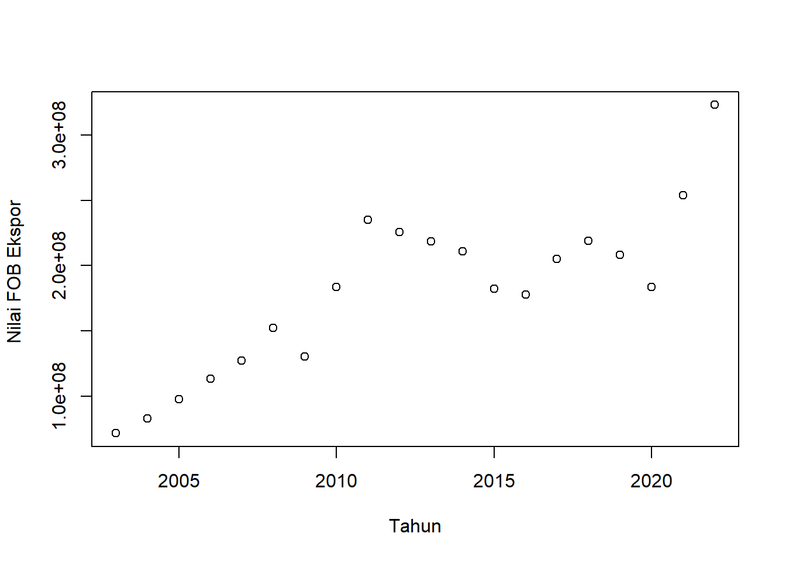
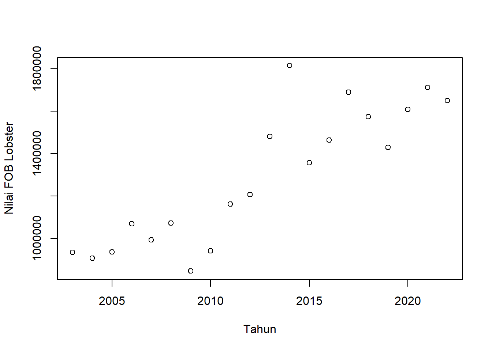
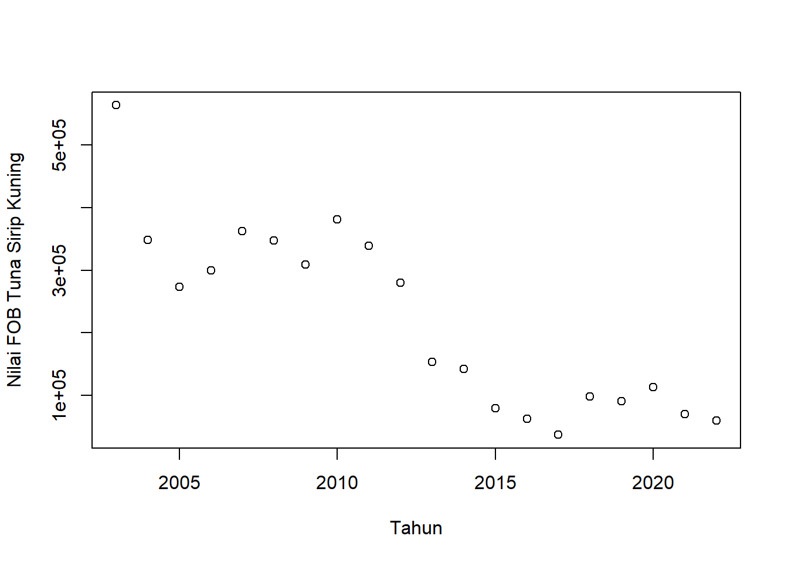
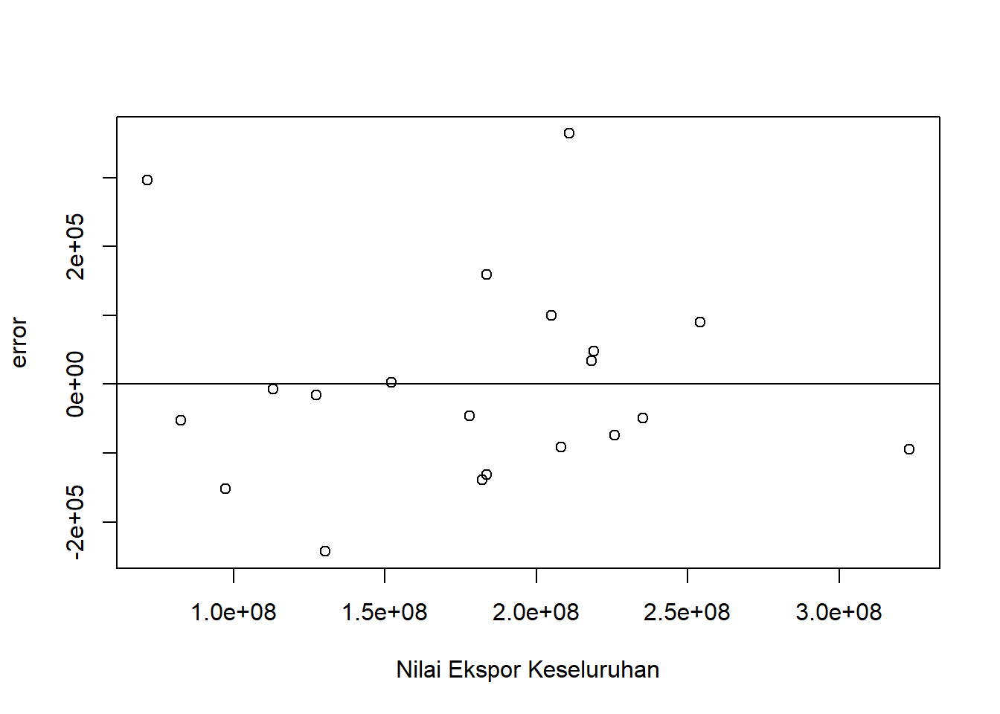
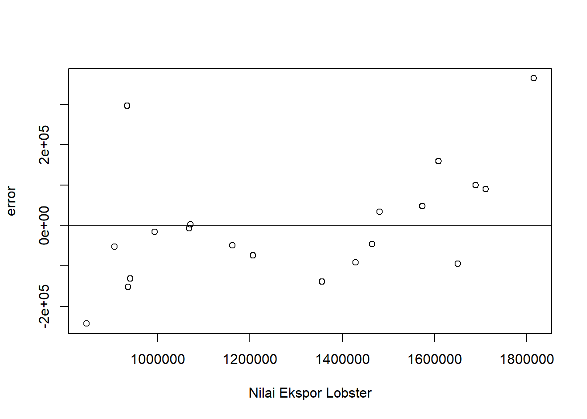
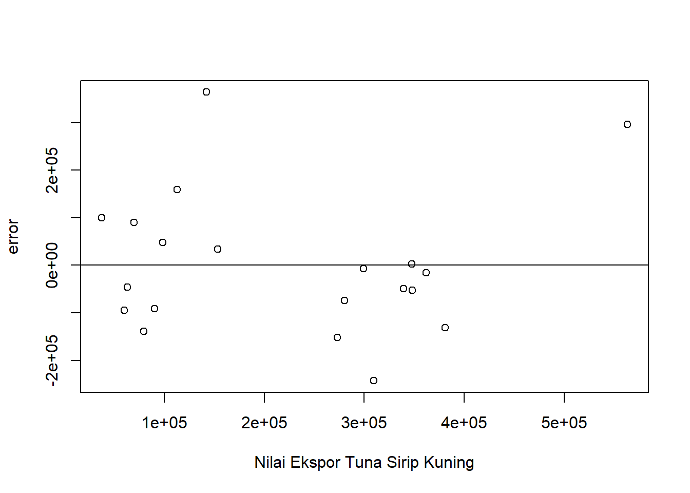

setwd("D:/METOPEL UAS/CELINE METOPEL")
library(readxl)
library(tidyverse)
library(kableExtra)Analisis Pengaruh Nilai Ekspor terhadap Kinerja Ekspor Perikanan Indonesia (Lobster dan Tuna Sirip Kuning.
Metode Penelitian Politeknik APP Jakarta

1 Pendahuluan
1.1 Latar belakang
Indonesia, sebagai negara kepulauan terbesar di dunia, memiliki kekayaan sumber daya laut yang melimpah, termasuk lobster dan tuna sirip kuning. Ekspor produk perikanan ini memiliki kontribusi signifikan terhadap perekonomian Indonesia. Namun, dinamika ekspor ini belum sepenuhnya dipahami. Oleh karena itu, penelitian ini dirancang untuk menganalisis hubungan antara nilai ekspor lobster (variabel dependen) dengan nilai ekspor keseluruhan Indonesia dan nilai ekspor tuna sirip kuning (variabel independen) menggunakan metode analisis linear berganda.
Analisis ini penting untuk memahami bagaimana fluktuasi dalam nilai ekspor keseluruhan dan ekspor tuna sirip kuning dapat mempengaruhi nilai ekspor lobster. Hasil dari penelitian ini diharapkan dapat memberikan wawasan baru bagi pembuat kebijakan dalam merumuskan strategi untuk meningkatkan nilai ekspor lobster, serta memberikan pemahaman yang lebih baik tentang dinamika ekspor perikanan di Indonesia. Selain itu, penelitian ini juga dapat menjadi acuan untuk penelitian lebih lanjut mengenai ekonomi perikanan di Indonesia.
1.2 Ruang lingkup
Ruang lingkup penelitian ini meliputi:
Analisis Data Ekspor: Penelitian ini akan menganalisis data ekspor lobster, tuna sirip kuning, dan total ekspor Indonesia. Data ini akan digunakan untuk memahami hubungan antara variabel-variabel tersebut.
Metodologi Statistik: Penelitian ini akan menggunakan analisis linear berganda, sebuah metode statistik yang digunakan untuk memahami hubungan antara dua atau lebih variabel.
Dinamika Ekspor: Penelitian ini akan membahas dinamika ekspor lobster dan tuna sirip kuning, serta bagaimana perubahan dalam nilai ekspor ini dapat mempengaruhi ekspor keseluruhan.
Strategi Ekspor: Meskipun penelitian ini tidak akan membahas kebijakan pemerintah secara langsung, hasil penelitian ini dapat digunakan oleh berbagai pihak yang berkepentingan dalam industri perikanan untuk merumuskan strategi ekspor yang efektif.
Ekonomi Perikanan: Penelitian ini juga akan membahas ekonomi perikanan di Indonesia, dengan fokus pada ekspor lobster dan tuna sirip kuning.
1.3 Rumusan masalah
Berikut adalah rumusan masalah yang relevan dengan topik penelitian:
- Bagaimana hubungan antara nilai ekspor lobster dengan nilai ekspor keseluruhan Indonesia dan nilai ekspor tuna sirip kuning?
- Apakah fluktuasi dalam nilai ekspor keseluruhan dan ekspor tuna sirip kuning memiliki pengaruh signifikan terhadap nilai ekspor lobster?
- Bagaimana dinamika ekspor lobster dan tuna sirip kuning dapat mempengaruhi ekspor keseluruhan Indonesia?
- Bagaimana hasil analisis ini dapat digunakan untuk merumuskan strategi ekspor yang efektif?
- Bagaimana penelitian ini dapat memberikan pemahaman yang lebih baik tentang ekonomi perikanan di Indonesia, khususnya ekspor lobster dan tuna sirip kuning?
1.4 Tujuan dan manfaat penelitian
Tujuan dari penelitian ini adalah:
Untuk memahami hubungan antara nilai ekspor lobster dengan nilai ekspor keseluruhan Indonesia dan nilai ekspor tuna sirip kuning.
Untuk mengetahui pengaruh fluktuasi nilai ekspor keseluruhan dan ekspor tuna sirip kuning terhadap nilai ekspor lobster.
Untuk memahami bagaimana dinamika ekspor lobster dan tuna sirip kuning dapat mempengaruhi ekspor keseluruhan Indonesia.
Manfaat penelitian ini, khususnya untuk mahasiswa, adalah sebagai berikut:
Pemahaman Konsep: Penelitian ini dapat membantu mahasiswa memahami konsep analisis linear berganda dan bagaimana menerapkannya dalam konteks ekonomi perikanan.
Keterampilan Analisis Data: Melalui penelitian ini, mahasiswa dapat mengembangkan keterampilan dalam menganalisis data ekspor dan memahami dinamikanya.
Pengetahuan Industri Perikanan: Penelitian ini dapat memberikan wawasan tentang industri perikanan di Indonesia, khususnya tentang ekspor lobster dan tuna sirip kuning.
Pengembangan Karir: Hasil penelitian ini dapat digunakan oleh mahasiswa yang berminat dalam karir di bidang perikanan atau ekonomi untuk memahami tren dan dinamika pasar.
Kontribusi Ilmiah: Penelitian ini juga dapat menjadi kontribusi ilmiah bagi mahasiswa dalam bidang ekonomi perikanan dan statistik.
1.5 Package
2 Studi pustaka
1. Ekonomi Perikanan dan Ekspor
Perikanan merupakan sektor penting dalam perekonomian Indonesia. Menurut Susilowati (2011), perikanan berkontribusi signifikan terhadap PDB negara dan merupakan sumber pekerjaan bagi jutaan orang. Ekspor produk perikanan, seperti lobster dan tuna sirip kuning, juga berkontribusi besar terhadap ekonomi.
2. Analisis Linear Berganda
Analisis linear berganda adalah metode statistik yang digunakan untuk memahami hubungan antara dua atau lebih variabel. Menurut Gujarati dan Porter (2009), analisis ini dapat digunakan untuk memprediksi nilai variabel dependen berdasarkan nilai variabel independen.
3. Dinamika Ekspor Lobster dan Tuna Sirip Kuning
Beberapa penelitian telah dilakukan untuk memahami dinamika ekspor produk perikanan. Misalnya, Satria et al. (2015) meneliti faktor-faktor yang mempengaruhi ekspor lobster di Indonesia. Sementara itu, Putra dan Yuliati (2017) meneliti hubungan antara ekspor tuna sirip kuning dengan variabel ekonomi lainnya.
4. Strategi Ekspor
Meskipun penelitian ini tidak akan membahas kebijakan pemerintah secara langsung, beberapa penelitian telah menunjukkan bahwa strategi ekspor yang efektif dapat meningkatkan nilai ekspor. Misalnya, Hidayat (2016) menunjukkan bahwa diversifikasi produk dan pasar dapat meningkatkan nilai ekspor.
5. Ekonomi Perikanan di Indonesia
Penelitian ini juga akan membahas ekonomi perikanan di Indonesia. Menurut Badan Pusat Statistik (2020), sektor perikanan berkontribusi sekitar 2,6% terhadap PDB Indonesia.
3 Metode penelitian
3.1 Data
| tahun | lobster | ekspor | siripk |
|---|---|---|---|
| 2003 | $ 933.435,00 | $ 71.553.141,04 | $ 562.830,00 |
| 2004 | $ 905.760,00 | $ 82.744.351,78 | $ 348.150,00 |
| 2005 | $ 935.331,00 | $ 97.387.627,57 | $ 273.110,00 |
| 2006 | $ 1.067.782,00 | $ 113.143.425,29 | $ 299.180,00 |
| 2007 | $ 992.860,00 | $ 127.226.102,18 | $ 361.860,00 |
| 2008 | $ 1.070.921,00 | $ 152.090.401,42 | $ 347.250,00 |
| 2009 | $ 845.223,00 | $ 130.357.798,59 | $ 309.250,00 |
| 2010 | $ 939.852,00 | $ 183.480.562,96 | $ 381.040,00 |
| 2011 | $ 1.161.657,00 | $ 235.095.129,14 | $ 339.290,00 |
| 2012 | $ 1.206.544,00 | $ 225.744.403,27 | $ 280.080,00 |
| 2013 | $ 1.481.284,00 | $ 218.308.408,83 | $ 153.700,00 |
| 2014 | $ 1.815.230,00 | $ 210.820.082,83 | $ 142.510,00 |
| 2015 | $ 1.355.905,00 | $ 182.158.298,80 | $ 79.630,00 |
| 2016 | $ 1.464.399,00 | $ 177.886.012,74 | $ 63.350,00 |
| 2017 | $ 1.689.721,00 | $ 204.924.485,91 | $ 37.610,00 |
| 2018 | $ 1.574.130,00 | $ 218.905.647,88 | $ 98.640,00 |
| 2019 | $ 1.428.656,00 | $ 208.057.763,66 | $ 90.690,00 |
| 2020 | $ 1.608.548,00 | $ 183.546.577,02 | $ 113.060,00 |
| 2021 | $ 1.711.568,00 | $ 254.008.548,67 | $ 70.150,00 |
| 2022 | $ 1.650.858,00 | $ 323.079.953,66 | $ 60.320,00 |
Fokus penelitian ini adalah untuk memahami hubungan antara nilai ekspor lobster dengan nilai ekspor keseluruhan Indonesia dan nilai ekspor tuna sirip kuning. Melalui analisis linear berganda, penelitian ini bertujuan untuk mengetahui bagaimana fluktuasi dalam nilai ekspor keseluruhan dan ekspor tuna sirip kuning dapat mempengaruhi nilai ekspor lobster. Selain itu, penelitian ini juga berfokus pada pemahaman dinamika ekspor lobster dan tuna sirip kuning dan bagaimana perubahan dalam nilai ekspor ini dapat mempengaruhi ekspor keseluruhan Indonesia. Meskipun penelitian ini tidak akan membahas kebijakan pemerintah atau pihak berwenang secara langsung, hasilnya dapat digunakan oleh berbagai pihak yang berkepentingan dalam industri perikanan. Penelitian ini juga berfokus pada pemahaman yang lebih baik tentang ekonomi perikanan di Indonesia, khususnya ekspor lobster dan tuna sirip kuning.
3.2 Metode analisis
Model analisis yang akan digunakan dalam penelitian ini adalah model regresi linear berganda. Model ini dapat ditulis dalam bentuk matematika sebagai berikut:
\[ Y = \beta_0 + \beta_1X_1 + \beta_2X_2 + \epsilon \]
dimana: - \(Y\) adalah variabel dependen, yaitu nilai ekspor lobster.
- \(\beta_0\) adalah konstanta, yaitu nilai ekspor lobster ketika nilai ekspor keseluruhan Indonesia dan nilai ekspor tuna sirip kuning sama dengan nol. - \(\beta_1\) dan \(\beta_2\) adalah koefisien regresi, yang mengukur perubahan dalam nilai ekspor lobster untuk setiap perubahan satu unit dalam nilai ekspor keseluruhan Indonesia (\(X_1\)) dan nilai ekspor tuna sirip kuning (\(X_2\)) secara terpisah, dengan asumsi variabel lainnya tetap. - \(\epsilon\) adalah galat atau kesalahan pengukuran.
Model ini akan diestimasi menggunakan metode kuadrat terkecil biasa (Ordinary Least Squares, OLS), yang bertujuan untuk meminimalkan jumlah kuadrat residu (perbedaan antara nilai observasi dan nilai yang diprediksi oleh model).
4 Pembahasan
4.1 Pembahasan masalah
4.1.1 Plot dan Data
#impor dataset
read_excel("lobster.xlsx")# A tibble: 20 × 4
tahun lobster ekspor siripk
<dbl> <dbl> <dbl> <dbl>
1 2003 933435 71553141. 562830
2 2004 905760 82744352. 348150
3 2005 935331 97387628. 273110
4 2006 1067782 113143425. 299180
5 2007 992860 127226102. 361860
6 2008 1070921 152090401. 347250
7 2009 845223 130357799. 309250
8 2010 939852 183480563. 381040
9 2011 1161657 235095129. 339290
10 2012 1206544 225744403. 280080
11 2013 1481284 218308409. 153700
12 2014 1815230 210820083. 142510
13 2015 1355905 182158299. 79630
14 2016 1464399 177886013. 63350
15 2017 1689721 204924486. 37610
16 2018 1574130 218905648. 98640
17 2019 1428656 208057764. 90690
18 2020 1608548 183546577. 113060
19 2021 1711568 254008549. 70150
20 2022 1650858 323079954. 60320dat <- read_excel("lobster.xlsx")
kbl(dat) %>%
kable_styling(bootstrap_options = c("striped", "hover", "condensed", "responsive"))| tahun | lobster | ekspor | siripk |
|---|---|---|---|
| 2003 | 933435 | 71553141 | 562830 |
| 2004 | 905760 | 82744352 | 348150 |
| 2005 | 935331 | 97387628 | 273110 |
| 2006 | 1067782 | 113143425 | 299180 |
| 2007 | 992860 | 127226102 | 361860 |
| 2008 | 1070921 | 152090401 | 347250 |
| 2009 | 845223 | 130357799 | 309250 |
| 2010 | 939852 | 183480563 | 381040 |
| 2011 | 1161657 | 235095129 | 339290 |
| 2012 | 1206544 | 225744403 | 280080 |
| 2013 | 1481284 | 218308409 | 153700 |
| 2014 | 1815230 | 210820083 | 142510 |
| 2015 | 1355905 | 182158299 | 79630 |
| 2016 | 1464399 | 177886013 | 63350 |
| 2017 | 1689721 | 204924486 | 37610 |
| 2018 | 1574130 | 218905648 | 98640 |
| 2019 | 1428656 | 208057764 | 90690 |
| 2020 | 1608548 | 183546577 | 113060 |
| 2021 | 1711568 | 254008549 | 70150 |
| 2022 | 1650858 | 323079954 | 60320 |
reg1<-lm(lobster~ekspor+siripk,data=dat)Plot
plot(dat$tahun,dat$ekspor,xlab="Tahun",ylab="Nilai FOB Ekspor ")
plot(dat$tahun,dat$lobster,xlab="Tahun",ylab="Nilai FOB Lobster")
plot(dat$tahun,dat$siripk,xlab="Tahun",ylab="Nilai FOB Tuna Sirip Kuning")
Plot Error
dat$m<-resid(reg1)
plot(dat$ekspor,dat$m,xlab="Nilai Ekspor Keseluruhan",ylab="error")
abline(h=0) # membuat garis horizontal di y=0
dat$m<-resid(reg1)
plot(dat$lobster,dat$m,xlab="Nilai Ekspor Lobster",ylab="error")
abline(h=0) # membuat garis horizontal di y=0
dat$m<-resid(reg1)
plot(dat$siripk,dat$m,xlab="Nilai Ekspor Tuna Sirip Kuning",ylab="error")
abline(h=0) # membuat garis horizontal di y=0
4.2 Analisis masalah
Hasil regresinya adalah
summary(reg1)
Call:
lm(formula = lobster ~ ekspor + siripk, data = dat)
Residuals:
Min 1Q Median 3Q Max
-242814 -91995 -31141 58646 364149
Coefficients:
Estimate Std. Error t value Pr(>|t|)
(Intercept) 1.319e+06 1.972e+05 6.687 3.82e-06 ***
ekspor 1.583e-03 7.672e-04 2.064 0.054677 .
siripk -1.413e+00 3.282e-01 -4.306 0.000478 ***
---
Signif. codes: 0 '***' 0.001 '**' 0.01 '*' 0.05 '.' 0.1 ' ' 1
Residual standard error: 156400 on 17 degrees of freedom
Multiple R-squared: 0.7862, Adjusted R-squared: 0.7611
F-statistic: 31.26 on 2 and 17 DF, p-value: 2.017e-06Hasil analisis regresi Anda menunjukkan beberapa temuan penting:
R-squared: Nilai R-squared sebesar 0,7862 menunjukkan bahwa sekitar 78,62% variasi dalam nilai ekspor lobster dapat dijelaskan oleh model Anda. Ini adalah hasil yang cukup baik, menunjukkan bahwa model Anda memiliki kekuatan prediksi yang kuat.
Intercept: Nilai intercept sebesar 1,319 berarti bahwa jika nilai ekspor keseluruhan Indonesia dan nilai ekspor tuna sirip kuning sama dengan nol, maka nilai ekspor lobster diharapkan sebesar 1,319. Faktanya bahwa ini berpengaruh positif sangat signifikan menunjukkan bahwa variabel ini memiliki pengaruh yang kuat dan signifikan terhadap nilai ekspor lobster.
Nilai Ekspor Keseluruhan: Koefisien sebesar 1,583 untuk nilai ekspor keseluruhan Indonesia menunjukkan bahwa untuk setiap peningkatan satu unit dalam nilai ekspor keseluruhan, nilai ekspor lobster diharapkan meningkat sebesar 1,583, asumsi variabel lainnya tetap. Meskipun ini berpengaruh positif, namun hanya sedikit signifikan, menunjukkan bahwa variabel ini mungkin tidak memiliki pengaruh yang kuat terhadap nilai ekspor lobster.
Nilai Ekspor Tuna Sirip Kuning: Koefisien sebesar -1,413 untuk nilai ekspor tuna sirip kuning menunjukkan bahwa untuk setiap peningkatan satu unit dalam nilai ekspor tuna sirip kuning, nilai ekspor lobster diharapkan menurun sebesar 1,413, asumsi variabel lainnya tetap. Faktanya bahwa ini berpengaruh negatif sangat signifikan menunjukkan bahwa variabel ini memiliki pengaruh yang kuat dan signifikan terhadap nilai ekspor lobster, tetapi dalam arah yang berlawanan.
4.3 Kesimpulan
Berdasarkan hasil penelitian dan analisis regresi linear berganda, dapat disimpulkan bahwa nilai ekspor lobster memiliki hubungan yang signifikan dengan nilai ekspor keseluruhan Indonesia dan nilai ekspor tuna sirip kuning. Model regresi yang dibuat mampu menjelaskan sekitar 78,62% variasi dalam nilai ekspor lobster.
Intercept positif yang sangat signifikan menunjukkan bahwa nilai ekspor lobster memiliki basis yang kuat, bahkan ketika nilai ekspor keseluruhan Indonesia dan nilai ekspor tuna sirip kuning sama dengan nol. Ini mungkin mencerminkan permintaan yang kuat dan stabil untuk lobster di pasar internasional.
Koefisien positif untuk nilai ekspor keseluruhan Indonesia menunjukkan bahwa peningkatan ekspor keseluruhan cenderung diikuti oleh peningkatan dalam nilai ekspor lobster. Namun, koefisien ini hanya sedikit signifikan, yang mungkin menunjukkan bahwa faktor-faktor lain selain nilai ekspor keseluruhan juga mempengaruhi nilai ekspor lobster.
Koefisien negatif yang sangat signifikan untuk nilai ekspor tuna sirip kuning menunjukkan bahwa peningkatan ekspor tuna sirip kuning cenderung diikuti oleh penurunan dalam nilai ekspor lobster. Ini mungkin mencerminkan persaingan antara produk perikanan dalam hal akses ke pasar ekspor atau preferensi konsumen.
Penelitian ini memberikan pemahaman yang lebih baik tentang dinamika ekspor perikanan di Indonesia dan dapat digunakan oleh berbagai pihak yang berkepentingan dalam industri perikanan. Namun, perlu diingat bahwa penelitian ini tidak membahas kebijakan pemerintah atau pihak berwenang secara langsung. Selain itu, hasil penelitian ini harus ditafsirkan dengan hati-hati, mengingat adanya potensi variabel tersembunyi dan kompleksitas hubungan ekonomi yang mendasarinya.
5 Referensi
Susilowati, I. (2011). Kontribusi Sektor Perikanan terhadap Perekonomian Indonesia. Jurnal Ekonomi dan Pembangunan Indonesia, 12(1), 91-104.
Gujarati, D. N., & Porter, D. C. (2009). Basic Econometrics (5th ed.). McGraw-Hill.
Satria, D., Yuliati, Y., & Putra, I. G. N. A. (2015). Faktor-Faktor yang Mempengaruhi Ekspor Lobster Indonesia ke Jepang. E-Jurnal EP Unud, 4(9), 598-609.
Putra, I. G. N. A., & Yuliati, Y. (2017). Analisis Faktor-Faktor yang Mempengaruhi Ekspor Tuna Sirip Kuning Indonesia. E-Jurnal EP Unud, 6(09), 4872-4893.
Hidayat, M. (2016). Strategi Peningkatan Ekspor Indonesia. Jurnal Ekonomi dan Pembangunan Indonesia, 17(1), 20-34.
Badan Pusat Statistik. (2020). Statistik Indonesia 2020. BPS.